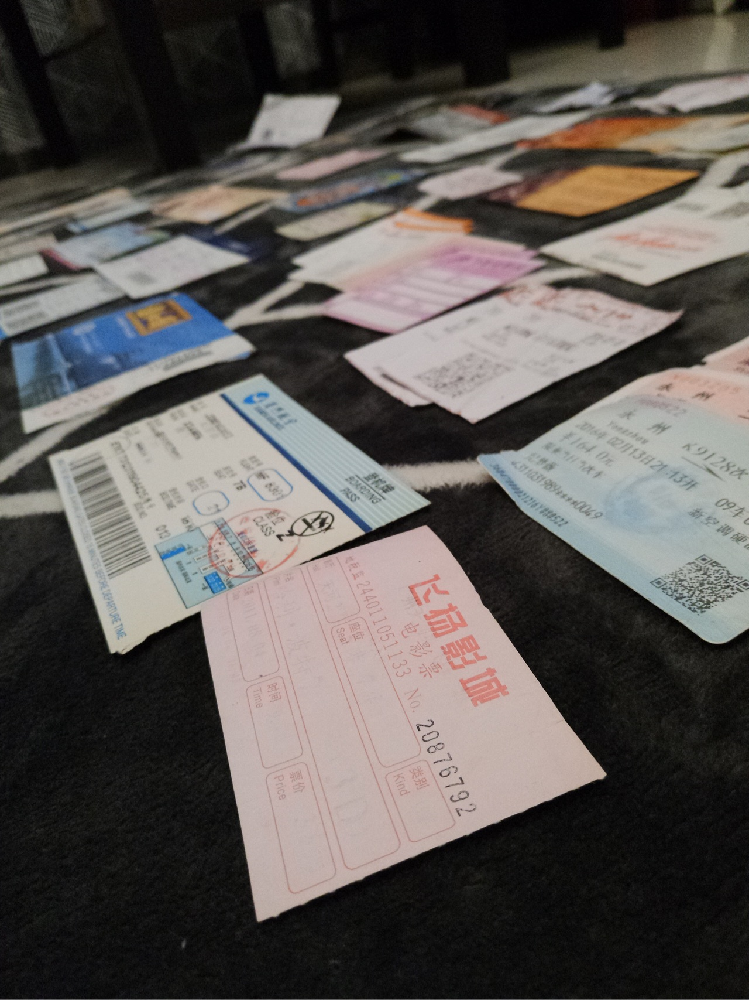
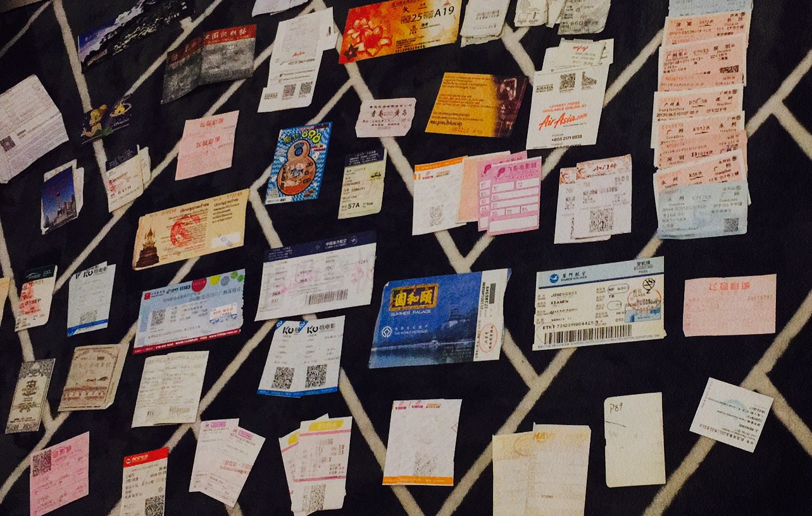
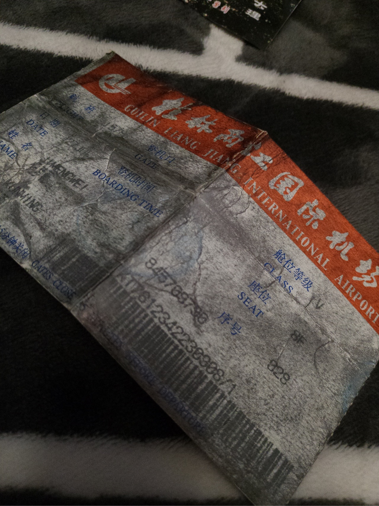
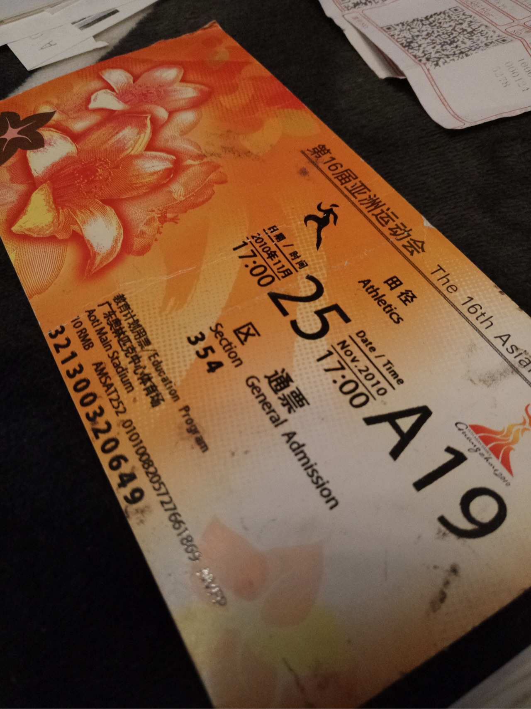
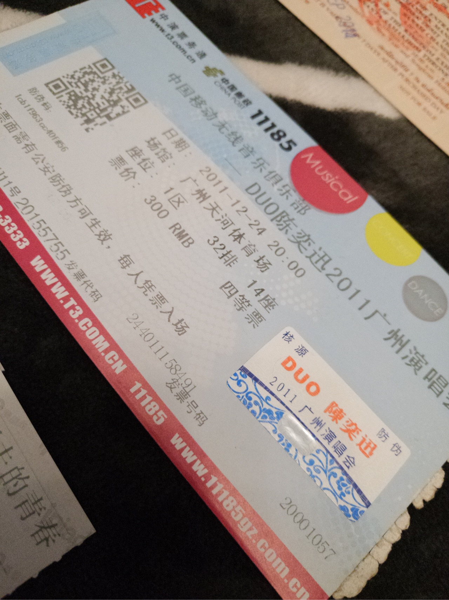
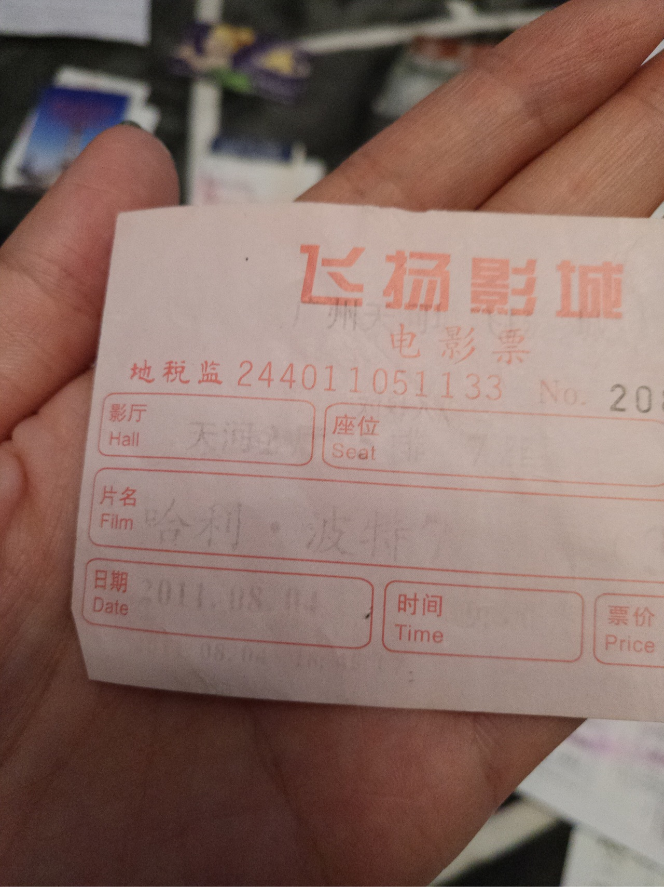
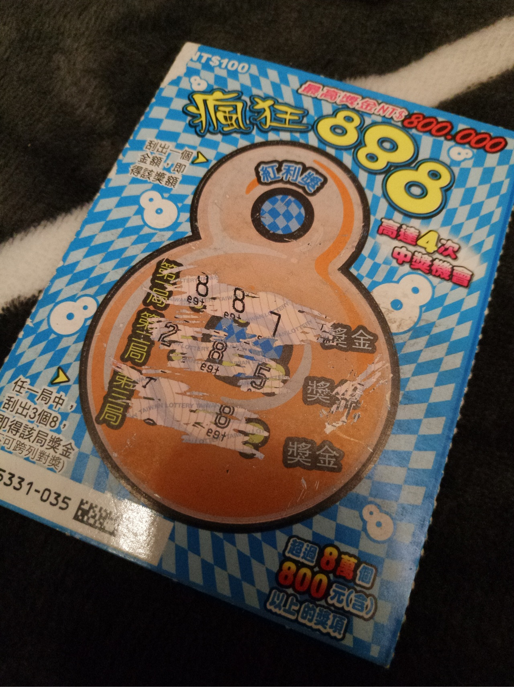
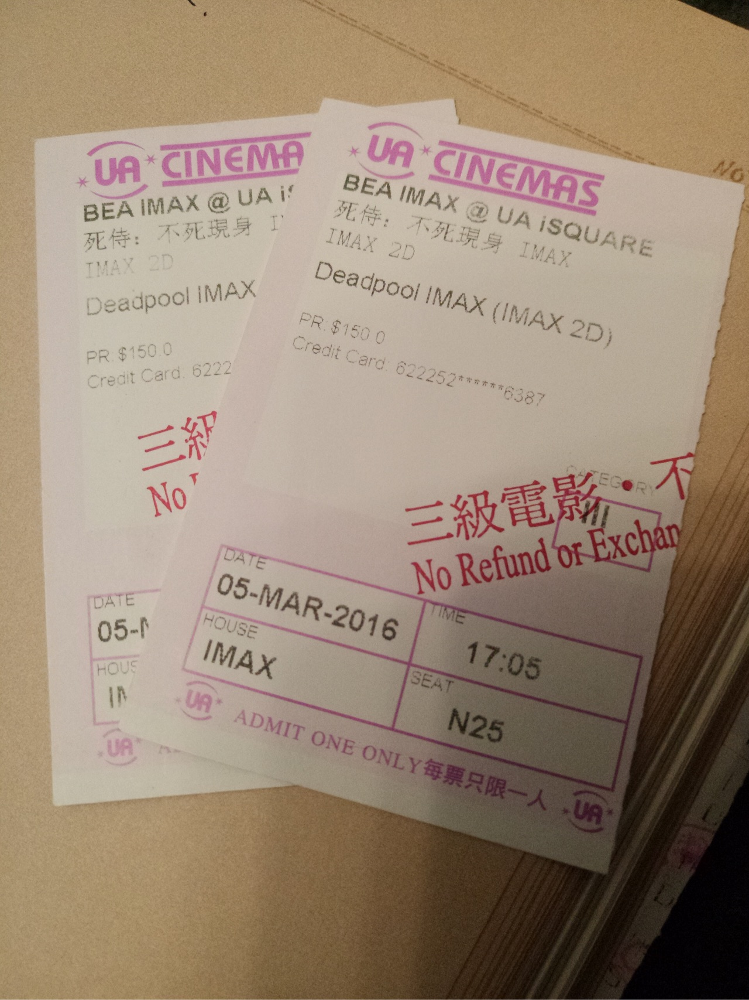
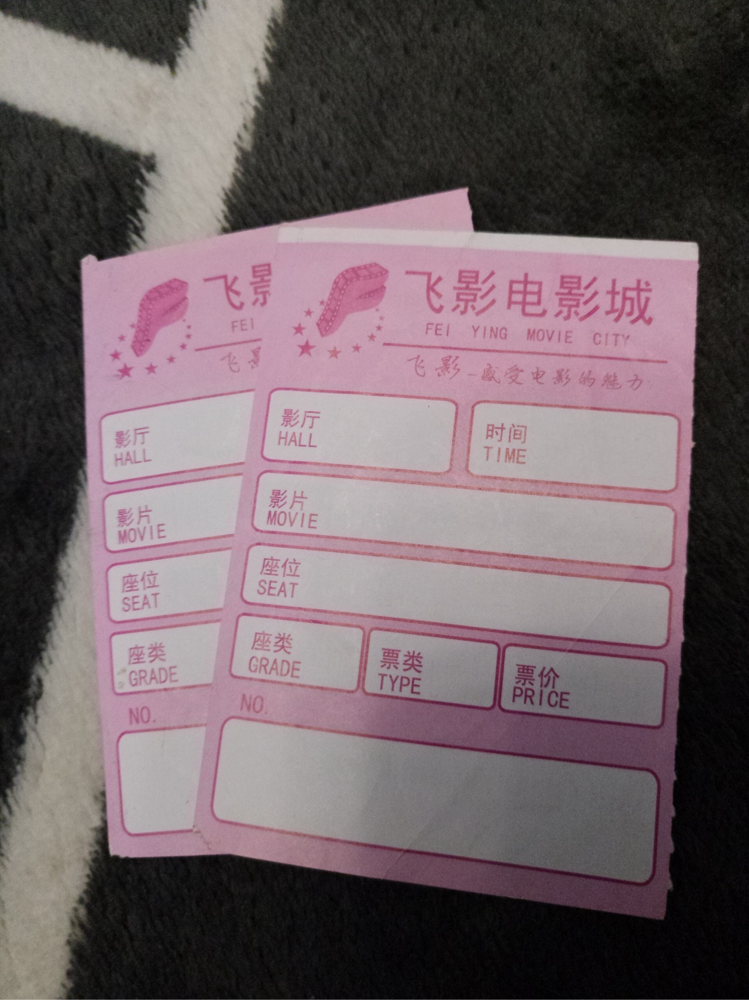

正文:
存票根，各种票根。


昨天晚上把原来攒的票根翻了出来，居然铺了满满一地，最早的票是2008年，这么看来这习惯居然已经坚持了九年多了。
九年的票根当然远远不止这么些，但因为近几年老是搬家，中途丢掉了一部分，还有段时间觉得麻烦也没怎么攒，可后来一看到票根还是会习惯性地收起来，然后就这么攒了九年。
不知道什么时候开始有的这个习惯，因为我平时是个忘性特别大的人，常常记不住事儿，而且还大大咧咧丢三落四，所以一开始只想说把重要的票根存起来当纪念，但是后来慢慢习惯了把去看的电影、出行的机票火车票各种门票都慢慢搜起来，无聊的时候就翻出来看看。
回看票根是一件很奇妙的事情，就像脑海里尘封的盒子突然被打开，其实早就想不起来当时的事情，但是看着票根，那些遗忘的时光又会再次浮现。
这是我第一次坐飞机，从桂林飞昆明，多新鲜呐，在本子里夹久了变成了这个色

亚运会田径比赛，没看到刘翔好遗憾

第一次听演唱会，最爱的Eason，其实也就听过这么一场演唱会，不太喜欢人多的场合，也不想听别人的演唱会。

最后一部哈利波特，字已经看不太清楚了
这是多少人少年时代幻想的最终篇，意义非凡。

在夜晚的台北西门町买的刮刮刮，啥都妹有刮到

太喜欢的一部电影，deadpool，内地没有上映，特地跑去香港看的，真的超级贱

尘封的盒子被打开，汹涌的回忆倾泻出来。
一张一张慢慢翻，每张背后都有一个故事，有笑有泪，有相见有别离。
相对于手机里的照片，我觉得这些实实在在的东西更能成为记忆的载体。不过有的票根因为年代久远，字都消失了，尤其是电影票，虽然夹在书里可以起到一点防止褪色的作用，但有的票根上的字还是消失得干干净净，我想破头也想不到上面原本是什么，坐在身边的人又是谁。

即便如此，这个习惯我还是会一直坚持下去。
这些票根就像微缩的人生轨迹。等到有一天有了孩子，我就可以把它们拿出来给他讲故事，跟他说很多他妈年轻时的趣事，告诉他这些消失的东西真实的存在过，让他知道他妈是如何成为现在的样子。
好想有架时光机，带我回去这些消失的时间里
看完要记得赞一下。
就酱。